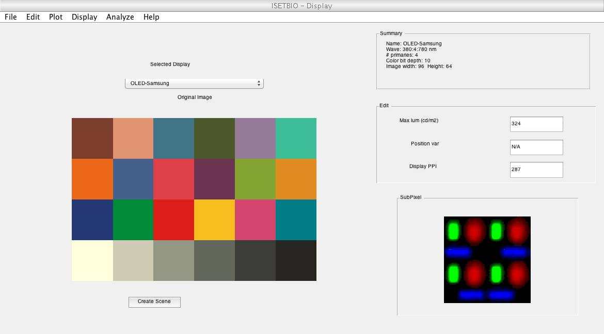
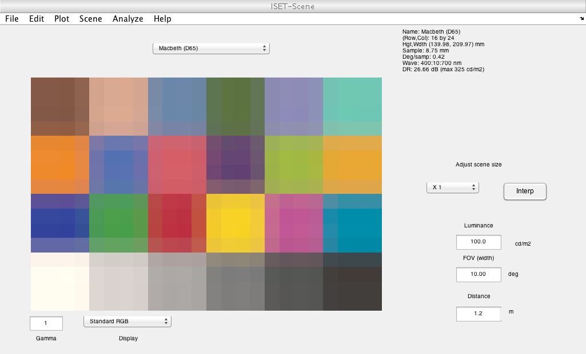
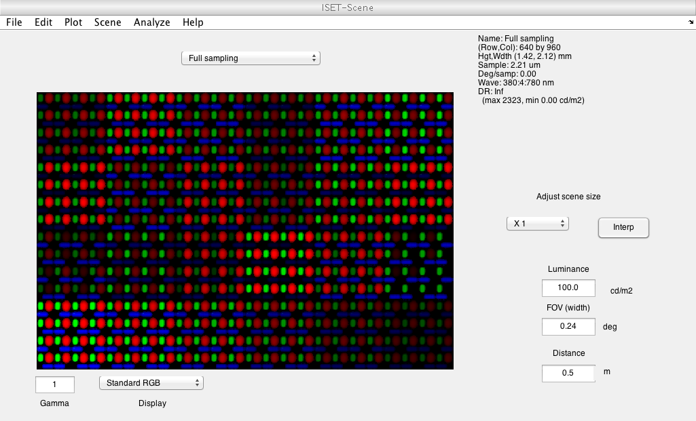
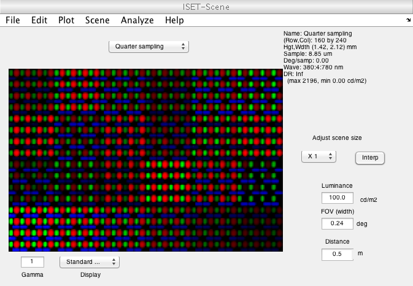
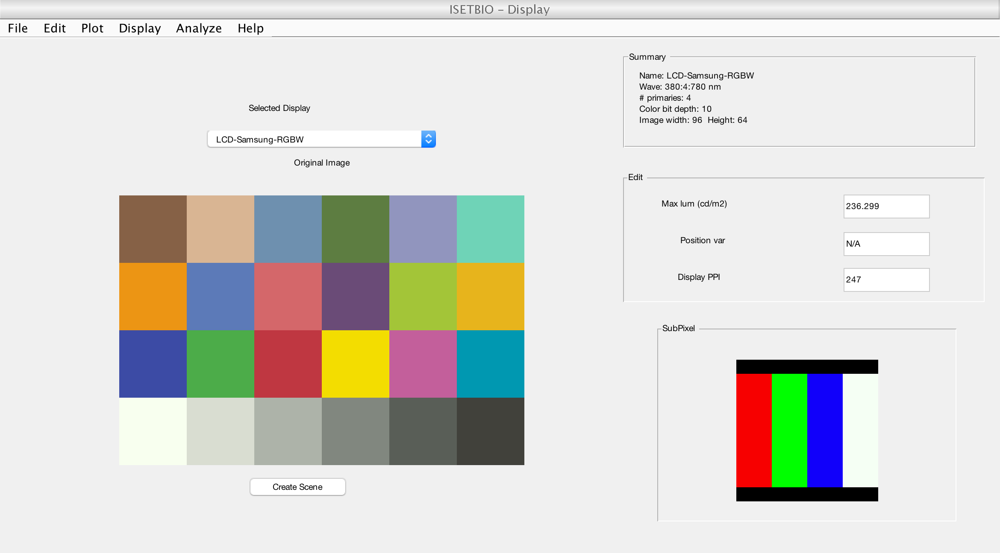

t_displayResolution
Introduction to ISETBIO objects and functions, displays.
Shows how to ontrol the display spatial resolution and examines effects of subpixel structure.
Also loads a description of a four primary display and demonstrates that creating a scene based on this does something.
NOTES: 1( Needs additional comments to at least outline what the principles of the subpixel rendering algorithm in the underlying routine are.
2) Needs some comments to explain what the four primary display code is likely to be doing, particularly given that we're likely to be looking at the scene window on a three-primary display.
(HJ) ISETBIO TEAM
Contents
Initialize ISET
ieInit;
Create a display
Create a default display
Other displays can also be created by specifying the calibration file
name
Example:
d = displayCreate('LCD-Apple');
d = displayCreate('OLED-Sony');
d = displayCreate('CRT-Dell');
Calibration files are stored in data/displays/d = displayCreate('OLED-Samsung');
vcAddObject(d); displayWindow;
[vcReadImage] Assuming 8bit image and 10 bit LUT
Create scene
Create a low resolution colorful scene
scene = sceneCreate; scene = sceneInterpolate(scene,[0.25 0.25]); vcAddObject(scene); sceneWindow;
Subpixel rendering
Render with subpixel structure Subpixel rendering will up-sample the image. So the input image cannot be too large (no more than 100x100)
I_small = sceneGet(scene,'rgb'); meanLum = sceneGet(scene,'mean luminance'); % The default size is given by the pixel intensity map. % This can take a minute for the highest spatial sampling rate % sz = displayGet(d,'dixel size'); % % % Turn subpixel rendering on doSub = true; % Default wavelength sampling and ambient illumination wave = []; illum = []; % Render. This might take a while. scene = sceneFromFile(I_small, 'rgb', meanLum, d, wave, doSub, illum); scene = sceneSet(scene,'Name','Full sampling'); vcAddObject(scene); sceneWindow;
Reduce the sampling rate
This will take less time
sz = displayGet(d,'dixel size')/4; scene = sceneFromFile(I_small, 'rgb', meanLum, d, wave, doSub, illum, sz); scene = sceneSet(scene,'Name','Quarter sampling'); vcAddObject(scene); sceneWindow;
RGBW display
This section creates a four primary display and simulates display of an image on it
I = 'eagle.jpg'; d = displayCreate('LCD-Samsung-RGBW'); vcAddObject(d); displayWindow; scene = sceneFromFile(I, 'rgb', [], d); vcAddObject(scene); sceneWindow;
[vcReadImage] Assuming 8bit image and 10 bit LUT